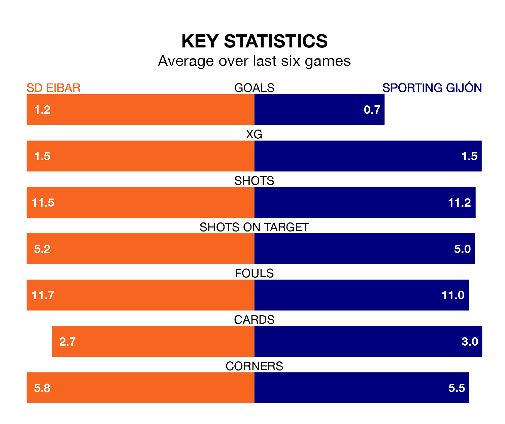

SD Eibar face a challenge to maintain their high-scoring form at home against a tight Sporting Gijón defence on Wednesday.
With 33 goals in 20 games, Eibar are the second-highest scorers in the Segunda División ahead of the 8.30pm kick-off at Estadio Municipal de Ipurúa.
They face a Sporting Gijón side who have scored 26 in 20 matches, but conceded only 15 goals, putting them joint-second among the league's tightest defences – only Leganés have conceded fewer goals.
In Orlando Rubén Yáñez Alabart, Sporting can rely on one of the league's safest pair of hands. He has kept 10 clean sheets in his 20 appearances this season, and no 'keeper has prevented the opposition scoring more often in the Segunda División.
In Eibar's net, Luca Zinedine Zidane has two clean sheets in 20 games. He has conceded a goal every 72 minutes, 70% more often than the 120 minutes between goals for Yáñez Alabart.
Sporting Gijón are third in the table after 20 games, of which they have won nine and drawn seven, earning 34 points.
SD Eibar are three places behind the away side in sixth, with nine wins and four draws putting them on 31 points.
The hosts are in disappointing form in the Segunda División, with one win and two draws from their last six games.
With a win and four draws over that period, Sporting's form is slightly better – they have taken seven points from 18, compared to Eibar's five.
In the last five years, Eibar and Sporting have played each other on four occasions. Eibar won two of them, Sporting one, and they drew once.
On average, SD Eibar scored 1.5 goals and Sporting Gijón 1.5 in those matches.
Their last meeting was on May 20, when they played out a 2-2 draw.
Eibar's last match was on Sunday, a 1-0 loss against AD Alcorcón.
Sporting drew 1-1 with Leganés last time out, on Saturday, with Juan Ferney Otero Tovar on the scoresheet.
